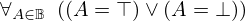
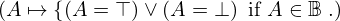
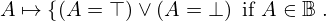
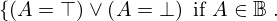
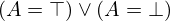
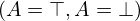
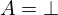
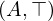
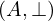

Theorem unfold_is_bool_explicit of type Forall¶
from the theory of proveit.logic.booleans¶
see dependencies
In [1]:
import proveit
# Automation is not needed when only building an expression:
proveit.defaults.automation = False # This will speed things up.
proveit.defaults.inline_pngs = False # Makes files smaller.
%load_theorem_expr # Load the stored theorem expression as 'stored_expr'
# import the special expression
from proveit.logic.booleans import unfold_is_bool_explicit
In [2]:
# check that the built expression is the same as the stored expression
assert unfold_is_bool_explicit.expr == stored_expr
assert unfold_is_bool_explicit.expr._style_id == stored_expr._style_id
print("Passed sanity check: unfold_is_bool_explicit matches stored_expr")
In [3]:
# Show the LaTeX representation of the expression for convenience if you need it.
print(stored_expr.latex())
In [4]:
stored_expr.style_options()
In [5]:
# display the expression information
stored_expr.expr_info()
| core type | sub-expressions | expression | |
|---|---|---|---|
| 0 | Operation | operator: 1 operand: 3 |  |
| 1 | Literal |  | |
| 2 | ExprTuple | 3 |  |
| 3 | Lambda | parameter: 19 body: 5 |  |
| 4 | ExprTuple | 19 |  |
| 5 | Conditional | value: 6 condition: 7 |  |
| 6 | Operation | operator: 8 operands: 9 |  |
| 7 | Operation | operator: 10 operands: 11 |  |
| 8 | Literal |  | |
| 9 | ExprTuple | 12, 13 |  |
| 10 | Literal |  | |
| 11 | ExprTuple | 19, 14 |  |
| 12 | Operation | operator: 16 operands: 15 | |
| 13 | Operation | operator: 16 operands: 17 |  |
| 14 | Literal |  | |
| 15 | ExprTuple | 19, 18 |  |
| 16 | Literal |  | |
| 17 | ExprTuple | 19, 20 |  |
| 18 | Literal |  | |
| 19 | Variable |  | |
| 20 | Literal |  |